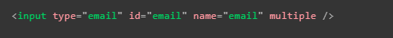
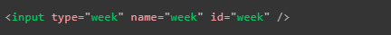

Formularios HTML
Los formularios son herramientas web en los que los usuarios pueden ingresar datos, los cuales pueden ser enviados a una base de datos o aplicados en el lado del ususario (por ejemplo configuracines de la paguina), basicamente son elemtos HTML en los que el usuario puede ingresar datos los cuales pueden ser empleados o almacenados por la paguina. En los formularios los datos ingresados con frecuencia son validados para corroborar que cumplen con los requeriemientos o caracteristicas del caso de uso, no hay que olvidar que los elemtos HTML unicamente aportan la estructura a la paguina, por ello es que todo lo relacionado con funcionalidad (envio de datos, validaciones etc) son realizados empleando JavaScript, a su vez al igual que el resto de la paguia suelen ser decorados con estilos CSS por lo tanto en estos elemtos es muy comun que las tres tecnologuias sean incorporada.
Elementos contenedores de los formularios
Form
-
Esta etiqueta se trata de un elemento contenedor especializado en los formularios, como tal su rol es la definir cueles elementos pertenesen a cual formulario, esto ya que no es muy extraño que una paguina posea más de un formulario en un mismo documento HTML, a su vez cuenta con algunos atributos espesificos para definir su comportamiento, si bien todos sus atributos son opcionales se concidera una buena practica el incluir como minimo los atributos: "action" y "method".
Action: Define la ubicación (URL) a la que se deben enviar los datos recopilados por el formulario
method: Define el metodo HTTP en el que se realizara la transferenci de datos ya sea la recepción o el envio de estos
Nota: No se debe anidar un formulao dentro de otro, ya que esto causaria que ambos se comporten de forma impredesible.
Los elemtos de un formularios pueden ser utilizados perfectamente fuera de uno, anque no tendan nada que ver con el formulario, pra estos casos si es lo que se desea tambien hay formas de vincularlos a este pese a encontrarte fuera del formulario.
Fieldset y Legend
-
El elemto "fieldset" se trata de un elemto contenedor especializado en agrupar widgets que comparten un mismo proposito, esto con fines semanticos y de estilos.
Por otro lado el elemto "legend" se utiliza para etiquetar un elemto "fieldset", esto con el fin de brindar un guía a los motores de lectura, su metodo de emplementación es incorporandolo justamente luego de la etiquet de apertura de "fieldset" y su efecto es que los motores vincularan el valor de "legend" con todos los elemtos dentro de "fieldset", a continuación se muestra un ejemplo de codigo:
Otra caracteristica del elemento "legend" es que su valor se puede anexar a otras elemtos de etiquetados, como se puede ver en el caso anterior, ya que para cada "input" se complementa el valor de su respectivo label con el valor de lengens, por lo que un lector de pantalla leeria: "Fruit juice size + valorLabel" para cada "input".
Nota: Comúnmente los motores de lectura leeran el contenido de la etiqueta "legend" antes que los "widgets" del formulario.
Como tal el elemento "fieldset" no altera la funcionalidad del formulario, lo que si hace es mejorar la accesibilidad del formulario para los motores de busqueda, por lo tanto es una etiqueta basada en mejorar la experiencia de personas con discapacidad visual.
Li y Ul
-
Estas etiquetas pos si solas conforman una lista, sin embargo en los formularios pudiese ser util el incorporaralas para actuar como contenedores para cada sección del formulario, esto se hace con el fin de poder aplicar los estilos CSS de mejor forma, como se puede ver en la siguiete imagen:

Elementos de un Formulario
Label
-
Este elemento define los encabezados de los elementos del formulario, la función de este plenamanrte de accesivilidad, tanto para usuarios comunes como para los mototres de lectura, un elemento "label" se debe vincular con el elemento al que este hace referencia, al vincularlo correctamente los motores de lectura pueden funcionar de una forma más entendible para sus usuarios.
Para vincularlo con el elemto controlador se utiliza el atributo "for" con un valor igual al atributo "id" del constrolador al que este hace referencia, por lo tanto el valor de "for" en el label y de "id" del controlador deben ser el mismo, como tal a la hora de expresarlo en codigo existen dos formas de estructurarlo:
-
La primera se trata de estrucutarar el "label" y "input" como dos elemtos separados
-
La segunda forma consta de anidar el "input" dentro del elemto "label"

Nota: sea cual sea la forma en la que se estructure en cdigo siempre es recomendable que se vincule los elemtos mediante el "for" y el "id", para asegurar que todos los motores de lectura lo interpreten adecuadamente.
Una ventaja de vincular corectamente los label con su respectivo widget es que al hacerse un clic sobre este automaticamante se activa el widget, esto es muy util para el diseño y accesivilidad del formulario, el siguiente es tanto un ejemplo de uso asi como del codigo en cuestión.
Ejemplo
Incluir varios label
En la mayoria de los casos pese a que se puede hacer esto no es muy recomendable ya que lo que son los motores de lectura no interpretan bien esto, sin embargo hay existe una forma de ejecutar esto de forma adecuada, consiste en anidar una etiqueta "span" dentro de "label" como se puede ver a continuación:
Pudiese darse casos como este en el que sea necesario o combeniente el incorporar más de una "label" para ayudar a los mototres de lectura a interpretar adecuadamente el "label", por ejemplo este es un codigo estructurado correctamente ya que se usa el atributo "aria-label" en cual su valor siempre es leido por estos, por lo tanto (importante recordar que el * representa que el campo es obligatorio).
Nota: Este tipo de practicas son necesarias ya que los motores de letura tienen formas definidas de describir los simbolos, por ejemplo al * lo descrien como estrella, por lo tanto en este caso estructuramos el valor contextual del simbolo para su adecuada interpretación.
Nota: El resultado de la interpretación de un motor de lectura puede variar dependiendo de cual se utilise sin embargo esta es la forma más clara de estructurar el codigo.
-
Input
-
La etiqueta "input" se trata del elemto de entrada de datos, en este elemento el atributo más importante con diferencia es "type", este elemto cuenta con multitud de valores, la caracteritica más resaltante del elemento "input" es que puede camviar su forma según el valor del atributo "type", este elmto se utiliza para crear la mayoria de los widget de un formulario.
Formas del elemto "Input"
-
Text: Traducido como Campos de texto de una sola linea, para definri esta forma el valor del atributo "type" tiene que ser "text", otra forma de lograr que el input tome esta forma es ignorar el atributo "type" por completo ya que este es el valor predefinido del input.
Nota: Este valor tambien se utilizara en caso de que el navegador desconozca el valor del atributo "type".

Nota: La limitación de un campo de texto de una sola linea es que culquier salto de linea que se ingrese sera eliminado al momento de enviar los datos.
-
password: En esta forma de "input" se visualiza un cuadro de texto con la particularidad de que es texto ingresado en este no es visible, permanese oculto representado por puntos o asteriscos, en si esta es la unica caracteristica distintiva de esta forma de "input", la cual es unicamente una función de la interfaz de usuario ya que en si no incluye ningun tipo de caracteristica de seguridad adicional, en los datos ni en el envio de estos.
Para la seguridad lo más recomendable es subir la paguina (almenos la de login) en un servicio HTTPS, ya que este tipo de conexión web cifra los datos antes de ser enviados, si de otra manera el la paguina se encontrara en un formato con conexióm HTTP los datos serian enviados sin encriptar, lo que los expondria a poder ser interceptados por terceros.
Para definir la uilización de este tipo de "input" el valor del atributo "type" tiene que ser igual a "password".
Nota: Los navegadores reconocen la implemetación de un campo de contraseña y tiene notificaciones que alertaran a los usuarios si estan por enviar un formulario que no cumple con los requeriemientos de ceguridad adecuados o no incluyen conexiones HTTPS.
-
Hidden: Traducido como "contenido oculto" un input de tipo "hidden" consite en un elemento oculto para los usuarios, por lo tanto nunca se mostrara en pantalla ni mubho menos el usuario podra enfocarse en este, este elemnto no solo puede almacenar datos si no que estos son enviados junto a la nformación del formulario.
Ya que el usuario nunca interactuara con este elmtento su valor puede ser definido atraves de JavaScript, es importante tener en cuanta que al tratarse de un elmtento oculto este no deve estar vinculado a ningun "label" y por lo mismo ya que no se muestra en pantalla es importante definir los atributos "name" y "value".
-
Checkbox: Este tipo de "input" se define con el valor "checkbox" en el atributo "type" y se trata de un elemento verificable, lo que significa que su estado puede cambiar dependiendo de si se encuentra verificado o no, otra caracteristica es que al enviarse el formulario unicamente se envian los campos que se encuentren verificados, si el elemto no lo esta, no sera envaiado apsolutamnente ningun dato.

En este tipo de elmentos es importante mantener una buena estructura de codigo para asegurar la acesivilidad de la paguina, los elemtos que esten relicaionados deben encontrarse en un mismo conjunto de campos con una leyenda que brinde una descripción general de la lista, por lo general cada conjunto de elementos "label/input" debe encontrarse en su propio elemento de lista (li).
En este tipo de "input" generalmente los elemtos "label" se incorporan directamente antes o despues del "input" y por ultimo las instruciones para el conjunto de checkbox generalemente es el contenido de la leyenda.
Nota: se puede crear un checkbox que este verificado por defecto utilizando el atributo "checked".
Nota: si el eltmento se encuentra verificado pero no tiene un valor definido este se enviara como "on".
Nota: Es importante recordar que cualquier "label" o elemto relacionado con el "checkbox" debe usar el mismo nombre en el atributo "name".
Acontinuación se muestra un ejemplo de codigo de este elemento:
Nota: por ultimo muchos desarrolladores concideran al "checkbox" como un boton de alternancia, (ya que su visualizacíon cambia al estar o no verificado) por lo que aplicando estilos CSS para presentarlo como tal, ve un ejemplo Aquí.
-
Radio: El boton de radio es definido con un valor "radio" en el atributo "type", Esta etiqueta puede parecer similar al "checkbox" sin embargo su funcionamiento es diferente ya que esta pensao para que el usuario unicamente selecione uno de varios elemtos, conseptualmente funciona como una lista de "checkbox" en los que solo un elemto puede estar marcado a la vez, para lograr este funcuinamiento hay que relacionar los diversos elemtos "radio" con un mismo valor en el atributo "name", al hacer esto se concidera que estos elementos conforman un grupo.
Al enviarse el formulario unicamente se envia el elemto que este verificado, si se da el caso de que ninguno de los elemtos esta verificado no se enviara ningun dato delsde el grupo de elemtos.
Nota: A diferencia del "checkbox" el elemto "radio" una vez verificado algun elemento este no puede ser desmarcado por el usuario almenos que restablesca el formulario.
-
Botones: Los valores del atributo "type" en el elemento "input" son tan versatiles que incluso puede llegar a mostrarse y actuar como un boton, en particular el "input" tiene tres valores con los que actua como boton, los cuales son los siguietes:
-
Submit: Esta modalidad tiene espesificamente la función de enviar los datos de un formulario, se define con el valor "submit" en el atributo "type"
Nota: En los elemtos "button" omitir o utilizar un valor desconosido en el atributo "type" genera ub boton de tipo submit, ya que es la función por defecto.
-
Reset: Restablece todos los widgets del formulario a su valor predeterminado, se define con un valor "reset" en el "type del elemtento
-
Button: No tiene una función definida, se trata de un boton personalizable con JavaScript, se define con el valor "button" en el atributo "type"
No confundir el "input"con el elemtento "button" el cual puede realizar las mismas funciones ya que este elemento se especializa en crear botones, no obstante se diferencian en que el elemento "button" puede alvergar texto y elementos de formato de texto en su interior, por otro lado en el input el texto del boton se define con el atributo "value" por lo que no puede contener estos elementos, en cambio la ventaja del "input" es más facil de diseñar , a continuación se muestran ejemplos de cada caso con ambos elementos:


Nota: la visualización de ambos elemtos es basicamente la misma.
-
-
Image: Este tipo de "imput" mezcla las caracteristicas de los elemtos "img" y "button", por lo tanto se visualiza igual que un "img" con la caracteristica de que se comporta como un boton submit al hacer clic en este, se define con un valor "image" en el atributo "type", por sus caracteristicas soporta todos los atributos de un elemento "img" así como los compatibles con los botones de un formulario.

Este elemento no envia los datos de un formulario, en su lugar envia las cordenadas del lugar de la imagen en el que se realizo el clic, para esto el valor de las cordenadas se define en base al eje X y el eje Y dentro de la imagen, tomando como el punto inicial (0X 0Y) la esquina superior izquierda de esta.
La clave de valor del eje X es el valor del atributo X seguido de la cadena ".x"
La clave de valor del eje Y es el valor del atributo Y seguido de la cadena ".y"
Por ejemplo si se realizo un clic en las cordenadas x=123 y=456 de la imagen entonces los datos se enviarian de la siguiente forma:

-
File: Este tipo de "imput" tiene la función de recibir un archivo para enviarlo junto con los datos de un formulario, para definir lo como tal es necesario utilizar el valor "file" en el atributo "type", otros atributos muy utilizados en este elemento son:
Multiple: Este atributol le permite al usuario selecionar más de un archivo a la vez
Accept: Este atributo se utiliza para definir los formatos de alchivo que seran aceptados por el elemento
Nota: En algunos telefonos este atributo puede aceptar fotos, videos y audio tomados directamente con el dispositivo, en este caso se añade información de la captura al atributo de aceptación de la siguiente manera:

-
Email: Se trata de un tipo de "input" más moderno ya que fue introducido en HTML5, consiste en un campo de texto con una validación con respecto a el tipo de dato que recibe, esta configurado para aceptar unicamente sireciones de correos electronicos, cual quier texto ingresado que no cumpla con el formato de uno sera automaticamnte rechazado, se define com tal aplicando un valor "email" en el atributo "type".
Nota: Utilizando el atributo multiple puede ser posible para el usuario ingresar varias direcciones de correo a la vez (separados entre si por comas).
En este tipo de elementos la validación de los datos es ejecutada automaticamente en el lado del cliente por el navegadorantes de eviar los datos, lo cual ahorra tiempo y consultas al servidor, no obstante las validciones ejecutadas en el lado del cliente no son seguras, ya que son muy faciles de desactivar, por lo tanto es indispensable implementar validaciones exautivas de los datos en el servidor, para evitar vulnerabilidades que terceros mal intencionados puedan aprobechar.
Nota: La validación del correo por parte del navegador no comprueba que el correo existe en realidad.
-
Search: Este tipo de "input" tambien es reciente y al aplicarse muestra un cuadro de texto especializado en realizar busquedas en la paguina, para utilizar este tipo de elemento es necesario aplicar el valor "search" en el atributo "type", un cuadro de busqueda se diferencia de un cuadro de texto normal principalmente en la apariencia de este, ya que suele mostrar caracteriticas particulares como:
Bordes redondeados
Una "X" en un costado la cual eliminara el texto ingresado automaticamente
Los teclados dinamicos mostraran "buscar" o mostraran un icono de lupa

Otra caracteristica positiva de estos es que los datos del atributo "search" se guardaran automaticamente para facilitar busquedas dentro de la pagina.
-
Tel: Se trata de un tipo de "input" especializado en recibir números de telefono, su efcto aplica para aquellos dispositivos que utilicen un teclado dinamico, ya que al selecionar el elemtento automaticamente se muestra un tablero de numeros.
No cuenta con ninguna validación reespecto a los datos ingresado en este ya que existen muchos formatos de números de telefonos en el mundo, por lo tanto tambien puede recibir letras, cuenta con un atributo llamado "pattern" el cual permite definir los formatos de número de telefon que se desea aceptar, para aplicar este tipo de "input" se utiliza el valor "tel" en el atributo "type".
-
Url: Este tipo de "input" se define con un valor "url" en el atributo "type", este elemento cuenta con varias validaciones ejecutadas en el lado del cliente las cuales rechazaran cualquier dirección que no cuenten con un protocolo HTTP o so la dirección tiene un formato incorrecto.
Al igual que con el "input" "emal" estas validaciones son inseguras ya que pueden ser desactivadas facimente, por lo que lo mejos siempre es implementar validaciones en el servidor que comprueben los datos recibidos.

Nota: Estas validaciones del lado del cliente no verifican que la dirección ingresada realmente existe.
-
Number: Este "input" muestra un campo de texto con la validación de exclusivamente aceptar números, tambien suelen mostrarse unas flechas acendentes y decendentes en el costado derecho del recuadro, estas flechas son otra alternativa para ingresar o modificar el texto sin el uso del teclado, ya que permiten aumentar o disminuir los números.
En este elemento se puede usar los atributos "min" y "max" para definir los valores minimos y maximos del elemento respectivamente, tambien se puede usar el atributo "step" para definir en que cantidad se realizara el aumento y disminución de las flechas, de forma determinada el valor de este atributo es "1", para incluir números flotantes se puede ingrsar un valor "any" en este.
Por ejemplo:
-
Control númerico restringido entre el 1 y el 10, con un incremento y reducción en sus botones de 2.
-
Control númerico restringido entre el 0 y el 1 con un incremento o reducción establecido de 0.01.

Nota: este elemento es util en aquellos cosasos en los que se ingrese numeros dentro de un rango establecido, si el numero se encuentra dentro de un rango inlimitado o demasiado grande es mejor optar por el elemto "tel".
-
-
Range: Se trata de otra forma de seleccionar un número, la cual consiste en la inplementación de un menu desplazable, el cual abarca un rango de valores definibles, se trata de un elemento menos preciso que los camos de texto por lo que se utiliza en aquellos casos en los que el valor exacto del no es muy importante, se define este elemento aplicando un valor "range" al atributo "type".
Al utilizar este tipo de elemtento es muy importante definir los atributos "min" "max" y "step" ya que cada uno define el valor minimo, el valor maximo y el valor incremental del elemento respectivamente.
En este ejemplo se utiliza el atributo "value" para definir el valor inicial del elemento.
El elemento "range" no provee de un elemtento visual que ayude a conocer el valor actual del elemento por esto es que suele acompañarse por el elemento output el cual permite mostrar un valor de entrada o salida de un elemento dentro de cualquier otro, este elemento se caracteriza por funcionar igual que un "label", es decir con el atributo "for" es posible relacionarlo con los elementos que generan la salida.
Nota: para que el elemento output funcione es necesario comandarlo com JS, he aqui un ejemplo:

-
Date y Time: En esta ocaión no se trata de un tipo de "input" en particular, si no que en su lugar se refiere a un conjunto de "inputs" de los cuales cada uno cumple con el rol de manejar los datos referentes a la hora y fecha proveida por el usuario, en este caso existen varios tipos de "input" para un mismo tipo de función ya que en realidad exisiten diversas formas de expresar la hora y fecha, por lo tanto cada tipo cuanta con caracteriticas propias que lo hacen adaptarce a un formato hora/fecha en espesifico.
Los elemtos Hora/fecha son:
-
Datetime-local: crea un widget para mostrar y elegir una fecha con hora sin información de zona horaria específica
-
Month: crea un widget para mostrar y elegir un mes con un año

-
Time: crea un widget para mostrar y elegir un valor de tiempo. Si bien la hora puede mostrarse en formato de 12 horas, el valor devuelto está en formato de 24 horas

-
Week: crea un widget para mostrar y elegir un número de semana y su año
Nota: En este formato la semana comienza el lunes y termina el domingo.
Nota: Un aspecto que vuelve complejo el uso de este tipo de elementos es el tema de la compativilidad ya que se tratan de elemtos HTML5.
Restricción de valores fecha/hora: Todos los controles de fecha y hora se pueden restringir mediante los atributos "min" y "max", y se pueden restringir aún más mediante el atributo "step" (cuyo valor varía según el tipo de "input"), tal y como se puede apreciar a continuación:
Nota: Este elemento tambien pueden adoptar el atributo "step" el cual define en que cantidad incrementara o se reducira el valor cundo se usen controles de entrada (flechas arriba y abajo).
-
-
Color: Esta es otra forma de "input", puede crear este elemto utilizando el valor "color" en el atributo "type". Los colores son siempre un poco difíciles de manejar. Hay muchas formas de expresarlos: valores RGB (decimales o hexadecimales), valores HSL, palabras clave, etc.
Su funcionamiento consiste en hacer clic en un control de color, generalmente se muestra la funcionalidad de selección de color predeterminada del sistema operativo.
-
Textarea
-
El elemento "textarea" se caracteriza por ser un cuadro de texto de multiples lineas con una extenciaón virtualmente infinita, (sus dimenciones nunca cambian pero se puede navegar por el texto), es importante resaltar que pese a que su función es similar a un elemento "input" posee dos diferencia bastantes significativas con este ultimo, la primera consisten en que este elemento conserva cualquier salto de linea que se ingrese en el texto, la segunda diferencia radica en la estructura del codigo de la etiqueta "textarea" en sí, ya que no se trata de un elemto cerrado como "input", si no que requiere de una etiqueta de cierre adecuada, esta diferencia entre ambas etiquetas cambia la foma en que se incorpora un texto predeterminado en cada una, la forma en que esto se define en estas etiquetas es la siguiete:

Nota: Por las caracteriticas del elemento "textarea" pese a que se puede anidar contenido HTML, CSS y JS en su interior todo se representa como si fuese contenido de texto din formato.
Atributos
Textarea cuenta con tres atributos exclusivos para poder definir su representación del texto:
cols: Define el ancho del control de texto en base a las columnas mostradas, este puede ser considerado un ancho incial ya que las dimenciones del elemento pueden ser cambiadas utilizando CSS, en caso de que este atributo no sea especificado su valor por defecto es 30
rows: Define el alto del control de texto en base a las filas mostradas, en este caso tambien se puede considerar que se trata de un alto inicial ya que las dimenciones nuevamente pueden ser cambiadas aplicando estilos CSS, en caso de que este atributo no sea definido su valor por defecto es de 10
-
wrap: Define la envoltura del texto del elemento, cuenta con dos valores posibles los cuales son:
soft: Indica que el texto enviado no sera envuelto pero a su vez el texto representado por del navegador si lo estara
hard: Indica que tanto el texto enviado como el representado estan envueltos y desactvados por lo que deja de envolver
Modificar su tamaño utilizando CSS
Para cambiar las dimenciones del elemento "textarea" se utiliza la propiedad "resize" la cual puede adoptar cualquiera de los siguientes valores.
both: Se trata del valor predeterminado y permite cambiar el tamaño horizontal y verticalmente
horizontal: Permite cambiar el tamaño del elemento horizontalmente
vertical: Permite cambiar el valor del alemento verticalmente
none: No permite cambiar el tamaño del alemento
block y inline: Se tratan de valores experimentales wue permiten cambiar el tamaño en bloque o en linea en función del la dirección del texto
-
Por ultimo pero no menos importante se encuentra el elemento "button", se trata del un boton el cual puede ser configurado para realizar varias acciones, un ejemplo de su estructura es el siguiete.

Al igual que el elemento "input", "button" acepta el atributo "type", el cual puede tomar cualquiera de tres valores:
Submit: Al hacer clic en el boton cuando tenga indicado un valor "submit" los datos de formulario seran enviados a la dirección(URL) definida por el atributo "action" del elemto "form"
Reset: Al dar clic en el boton mientras posea este "type" todos los elementos del formulario (widgets) se restableceran a su valor por defecto, desde el punto de vista de UX esto es un mala practica, lo mejor es solo incluirlo en los casos en los que de verdad sea nesesario su implementación
Button: El valor button por si mismo literalmente no hace nada, ya que la función de esta opción permitir crear una funcionalidad personalizada con JavaScript
Nota: Tambien se puede crear un boton usando el elemento "input" con el atributo "type", el cual posee siertos valores los cuales mostraran a el "input" como un boton, sin embargo la diferencia radica en que la etiqueta "button" permite contenido HTML completo, lo que significa un contenido de boton más completo y creativo.
Select
-
Este elemento consiste en un cuadro de selección con uno o más elemtos de opción como elementos secundarios, de los cuales cada uno espesifica una de las opciones del "select", este elemento secundario se trata de un elemento "option", en otras palabras el "select" es un cuadro de seleción, cada una de las opciones de este es definida por una etiqueta "optión" las cuales se encuentran alvergadas en el interiro de la etiqueta "select".
Si es necesario mostrar alguna de las opciones como dato selecionado por defecto se puede defimir utilizando el atributo "selected" en el "option" que lo contenga.
Tambien es posible anidar los elementos "option" dentro de una etiqueta "optgroup" con el fin de agrupar las opciones que posean algun tipo de relación entre sí, por lo tanto si se incorpora un elemento "optgroup" dentro del "select" este mostrara a aquellos elementos "option" que se encuentren en su interior como un grupo de opcines, como se puede apreciar a continuación.
Nota: Para mostrar un encabezado en los grupos de opciones se utiliza el atributo "label" en el alemento "optgroup".
Nota: Los encabezados de los grupos de opciones unicamente son eso y no son seleccionables como opción.
Los elementos "select" cuantan con otros atributos particulares los cuales son:
-
value: Este en caso de que se utilise define el verdadero valor del dato que se enviara con el formulario, por lo tanto asigna el valor implicito de la opción, se utiliza en aquellas situaciones en las que sea necesario que el usuario visualise un valor pero sea más eficiente enviar otro como se puede ver en el ejemplo
Nota: en caso de que no se aplique este atributo el contenido del elemento "option" se enviara como valor de esta opción.
-
size: permite definir el numero de opciones visibles en el elemento "select" cuando este no se encuentre seleccionado
Nota: Por defecto su valor es 1.
-
multiple: este atributo permite que sea posible el selecionar más de una opción a la vez, para hacerlo el usuario debe de mantener presionada la tecla Ctrl/kbd>
Nota: Todos los navegadores que son compatibles con la etiqueta "select" tambien lo son con el atributo "multiple".
-
Datalist
-
El elemento "datalist" o lista de datos se trata de un elemento el cual brinda al usuario diversas opciones que pueden ser ingresadas en un cuadro de texto, no se trata de un controlador en sí, se trata de un elemento complementario para cuadros de texto, a diferencia del elemento "select" el "datalist" tiene la función de autocompletar el texto del usuario, para alvergar las opciones del elemento se utiliza el elemento "option" al igual que en los "select", su estructura es la siguiente:

Como se puede ver en el ejemplo el controlador utilizado es un "input" de tipo text, el cual se vincula con el elemento "datalist" para que este realise su función de auto completado y lista en el cuadro de texto, la forma de vincular ambos elementos es atrabes del uso del "id" del "datalist" y del atributo "list" del alemento "input", para que ambos elementos esten correctamente vinculdos ambos atributos deben de coincidir.
A continuación se muestra un ejemplo de inplementación de este elemento:
Nota: Este elemento esta soportado por la gran mayoria de los navegadores sin embargo en las verciones antiguas puede que este no sea el caso, pero para estos casos existe un truco para asegurar la inplementación de la lista, el truco consisten en anidar un "select" justo debajo del "datalist", en los navegadores compatibles todo elemento dentro de un "datalist" que no sea un "option" es igorado sin embargo cuando el navegador no soporta la etiqueta se visualizara el "select" que se encuantra anidado.
Nota: El elemento "datalist" puede ser utilizado en conjunto con cualquier otro elemento siempre y cuando este requiera una entrada de datos por parte del usuario sin embargo el efecto de la etiqueta en otos elementos no esta estandarizado por lo tanto se podria comportar deferete segun desde cual navegador se ejecute.
Progres
-
Se trata de una barra de progreso la cual representa un valor númerico, el cual cambia con el tiempo hasta alcanzar un valor maximo, el cual se define con el uso del atributo "max", este elemento se utiliza entodas aquellas situaciones en las que se requiera representar el progreso de una tarea, por ejemplo el porcentaje de descarga deun archivo.

Nota: el contenido dentro de este elemento realmente solo es una alternativa para aquellos navegadores que no sean compatibles con esta etiqueta así como para que los motores de leectura los lean.
Meter
-
Se trata de una barra de medidor, representa un valor fijo delimitado entre valores minimos y maximos, este valor se representa visualmente como una barra, para saber como se ve esta barra comparamos el valor con otros valores establecidos.
-
Los atributos "low" y "high" dividen el rango en tres partes:
La parte inferior se encuentra entre los valores min y low
La parte media del elemento se encuentra entre los valores low y high
La parte superior se encuentra entre los valores high y max
-
El atributo "optimun" define el valor optimo para el elemento medidor, junto con los atributos "low" y "high" define que parte del rang se prefiere:
Si el valor optimo se encuentra en la parte inferior esta se considera la parte preferida, la parte media se considera promedio y la parte alta una mala area
Si el valor se encuentra en la parte media esta se considera la parte preferida, mientras que las partes inferior y superior se consideran promedio
Si el valor optimo se encuentra en la parte superior esta se considera la parte preferida, la parte media se considera una parte promedio y la parte baja se considera una mala area
Segun el area en la que se encuentre el valor optimo el color de la barra cambiara:
Si se encuentra en la parte preferida la barra será de color sera verde
Si se encuentra en la parte promedio la barra será de color amarilla
Si se encuentra en la parte mala la barra será de color roja
Nota: un ejemplo de uso seria la representación visual del espacio de memoria de un disco, al tener poco espacio ocupado se visualiza verde, al esta a la mitad de su capacidad amarillo y al estar casi lleno se visualiza rojo.
Nota: el contenido dentro de este elemento realmente solo es una alternativa para aquellos navegadores que no sean compatibles con esta etiqueta así como para que los motores de leectura los lean.
Nota: el soporte para esta etiqueta es bueno, entre los navegadores grandes el unico que no lo soporta es internet explorer.
-
Estructura de un formulario
Como ya se ha visto en ejemplos anteriores es muy comun e inclusi recomendable el no utilizar unicamnte elemtos especializados para estructrarlos, por ejmplo es muy común el uso de listas ("ul" "ol" "li") para estructurarlos así como elemtos "p" titulos y subtitulos (h1, h2, h3...) e incluso se recomienda el utilizar contenedores como "div" o "sección" para estructurar el formulario en secciones.
Basicamnte estructrar un formulario consiste en hayar una estructrar que le permite al desarrollador crear formularios accesibles y utlizables por todo tipo de usuarios, una de las unicas recomendacione es estrucrarlo de forma que cada sección separada en funcionalidad debe estar contenida en un contenedor propio con elemtos de conjunto de campo para incluir los botones de opción.


Atributos Basicos
Los elemtos de entrada de texto son los widget más basicos de un formularios, permiten que el usuario ingrese texto en ellos, pos defecto estos elemtos unicamente soportan texto sin formato (negra cursiva etc) por lo que todos los elemtos que soporten texto enriqusido son personalizados con la implemtación de CSS y de JavaScript.
Algunos atributos comunes en los elementos de entrada de texto son:
Readonly: En elementos en los que se aplique este actributo, el valor de entrada no podra ser modificado por el usuario, a su vez el valor de este sera envado junto a los datos proveidos por el usuario
Disabled: Este atributo derectamente desactiva el widget, por lo que no se podra modificar el valor inicial de este elemento, a su vez el valor de este no sera enviado junto a los datos ingresados por el usuarios
Placeholder: El valor de este atributo es el valor de entrada del elemto en cuastión
Size: Define el tamaño fisico del cuadro de texto
maxlength: Define la cantidad maxima de caracteres que recibira el elemento de texto
Spellcheck: Activa la función de corección de ortografia del navegador (si es que este lo soporta)
Algunos atributos comunes en los elementos de un formulario son:
Autofocus: Este atributo define que el elemento en el que se aplique tendra el foco de entrada cuando se carga la paguina, solo un elemento asociado a un formulario puede usar este atributo, su valor por defecto es "false"
Disabled: Desactiva un elemento para que el ususario no pueda interactuar con este, su valor por defecto es "false"
Form: Este atributo vincula un elemento externo con un formulario del mismo documento, para hacer correctamente el valor del atributo debe ser igual al "id" del formulario al que se dese vincular el elemento, esta relación funciona incluso si el elemento se encuentra anidado dentro de un formulario diferente
Name: El nombre del alemto se envia junto con los datos del formulario
Value: Define el valor inicial del elemento
Envio de datos de un Formulario
Como ya se ha dicho anterior mente el envio de los datos se realiza segun el valor de los atributos "action" y "method", sin embargo el primer paso para enviar los datos del formulario es proveer a todos los elemtos (controladores) con nombres propios, estos son muy importantes tanto en el lado del cliemte com en el lado del servidor, ya que le indican al navegador que nombre darle a cada dato, por parte del servidor los datos se manejan en relaciones de nombre-valor.